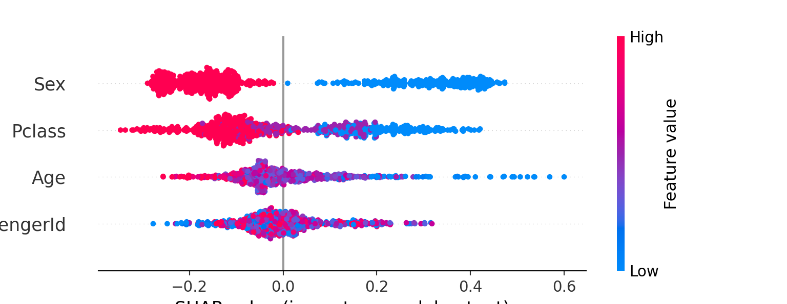
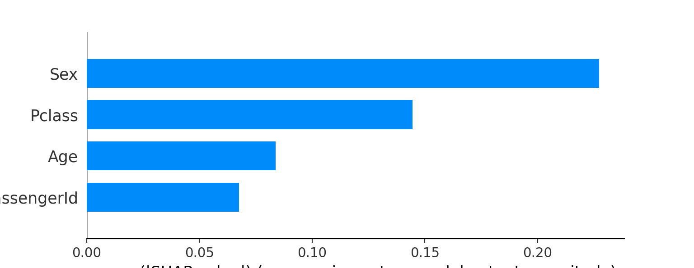
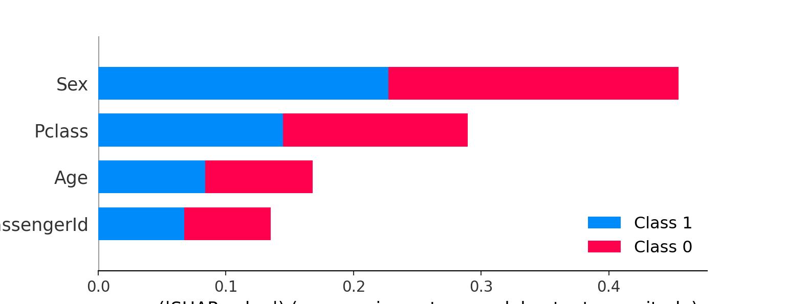

Chapter 2 Introduction
We unify the various recent attempts to (i) improve the interpretability of tree-based models and (ii) debias the the default variable-importance measure (MDI) in random forests. In particular, we demonstrate a common thread among the out-of-bag based bias correction methods and their connection to local explanation for trees. In addition, we point out a bias caused by the inclusion of inbag data in the newly developed SHAP values. Empirical and simulational studies indicate substantial improvements in the discriminative power of SHAP values when out- of-sample data are used instead.
2.1 Titanic
We will begin by illustrating the basic problem on the Titanic data.
2.2 Titanic Regression Trees
rf = RandomForestRegressor(max_depth=50, random_state=0, n_estimators=100,max_features=2)
tmp=rf.fit(X, Y)
explainer = shap.TreeExplainer(rf)
shap_values = explainer.shap_values(X)

2.3 Titanic Classification Trees
rf2 = RandomForestClassifier(max_depth=50, random_state=0, n_estimators=100,max_features=2)
tmp=rf2.fit(X, Y)
explainer2 = shap.TreeExplainer(rf2)
shap_values2 = explainer2.shap_values(X)
2.4 Simulated Data
We replicate the simulation design used by where a binary response variable Y is predicted from a set of \(5\) predictor variables that vary in their scale of measurement and number of categories. The first predictor variable \(X_1\) is continuous, while the other predictor variables \(X_2 ,\ldots, X_5\) are multinomial with \(2, 4, 10, 20\) categories, respectively. The sample size for all simulation studies was set to n = 120. In the first all predictor variables and the response are sampled independently. We would hope that a reasonable variable importance measure would not prefer any one predictor variable over any other. In the second simulation study, the so-called , the distribution of the response is a binomial process with probabilities that depend on the value of \(x_2\), namely \(P(y=1|X_2=1)=0.35, P(y=1|X_2=2)=0.65\) .
As is evident in the two leftmost panels of Figure 2.1, both the Gini importance (MDI) and the SHAP values show a strong preference for variables with many categories and the continuous variable. This bias is of course well-known for MDI but maybe unexpected for the SHAP scores.
Figure 2.1: Results of the null case, where none of the predictor variables is informative.
The results from the power study are summarized in Figure 2.2.
MDI and SHAP again show a strong bias towards variables with many
categories and the continuous variable. At the chosen sigal-to-noise ratio MDI fails entirely to identify the relevant predictor variable. In fact, the mean value for the relevant variable \(X_2\) is lowest and only slightly higher than in the null case.
Figure 2.2: Results of the power study, where only \(X_2\) is informative.